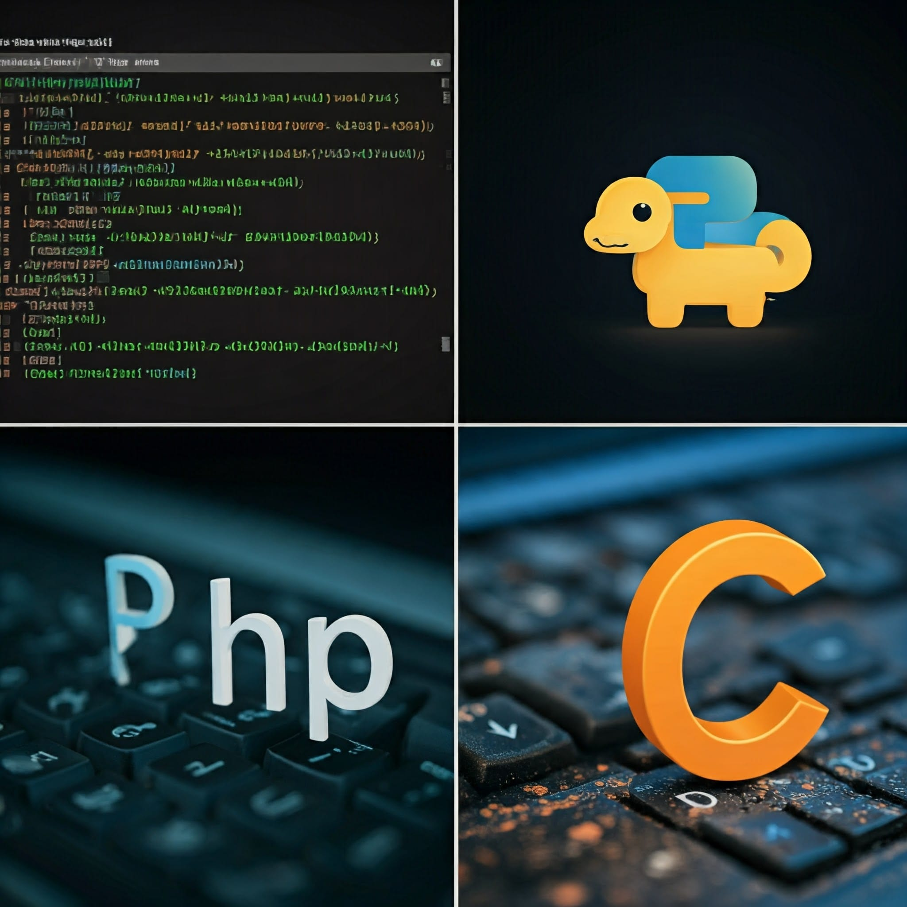
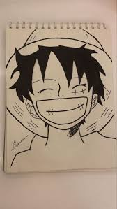

welome to my cv
Personal list of my cv

Ambitious and motivated individual with a passion for programming and soccer, seekingto leverage my skills and dedication to excel in my career. Committed to continuous learning and professional growth in the field of technology.
I graduated from Nablus High School and then went to courses in programming languages such as [c++ , pithon and mips], in addition to web development skills in HTML and CSS and I want to learn JavaScript with you. I have strong analytical skills that I developed through various programming projects, and I thrive in teamwork environments, especially in sports, and teamwork in projects where I honed my teamwork and leadership skills.
My interests include developing software and creating innovative solutions, along with being an active participant in local soccer teams that foster teamwork and discipline. I aspire to pursue a successful career in programming, focusing on [goglkeeper in football] while continuously improving my skills and contributing positively to my team and community.
I have some hobbies:
- Programming :

- goglkeeper in football :

- Anime drawing :

--------
have talked about my identities but my ambition is toI aspire to become one of the best programmers in Palestine, and to dedicate myself to developing the field of software development. My ultimate goal is to establish my own software company, with the aim of becoming one of the strongest and most innovative companies on a global scale. Through hard work, continuous learning and a commitment to excellence, I am determined to make a significant impact in the world of technology.
--------
I have projects. Show one of the projects : my projec